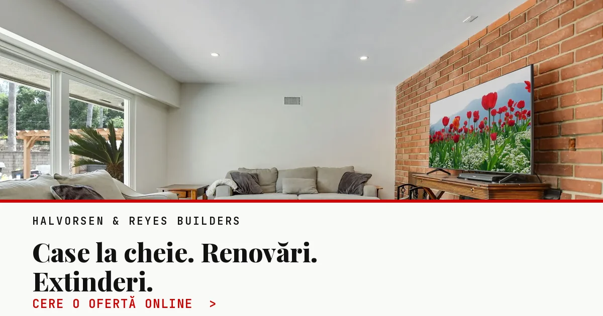

Halvorsen & Reyes Builders
A one-page marketing site for Halvorsen & Reyes Builders - a fictional Denver construction company, used as a case study for building a small business site the way a real client would need it: fast, accessible, and with a lead form and chatbot that are actually safe to put in front of strangers on the internet.

What it does
Hero, services, a 5-project portfolio carousel, team section, and a "Request a quote" form - plus a chatbot that answers questions about the company and politely redirects anything else to the form instead of making things up.
My role
Product decisions, content, the design system, and the security/architecture choices below; the code was written in pair-programming with an AI assistant (Claude).
Quality
Audited with Lighthouse and an automated accessibility/design checker, fixed to a clean score across five review passes. Security-reviewed: no secret keys in client code, verified directly from View Source and Network. 13 unit tests cover the quote form's checks, what gets sent to the database, and the chatbot's fallback never quoting a price; they run on every push.
Status
Live on Netlify · MIT · fictional client, used as a case study · source on GitHub. The quote form is live; the AI chatbot is switched on for live demos, to keep running costs at zero, and a scripted fallback answers in between.
Why it exists
A small business site is a good test of restraint: no framework, no backend you don't need, and every "smart" feature has to earn the risk it adds.
The brief was a typical small-business ask: a fast one-page site, a way for visitors to request a quote, and a chatbot that can answer basic questions without a human on call 24/7. The interesting part isn't the page itself - it's making the two features that touch the outside world (a public form and a public chatbot) safe to actually ship: rate-limited, unable to leak a key, and unable to be used for anything other than what it's there for.
Design case study: a builder's site that looks precise, not trendy
The client is a fictional construction company in Denver, in business since 2011. Its site has to make a small company look serious and trustworthy to people planning a renovation or a new home, and stay fast and accessible on a phone.
Pick a direction that fits a builder
I started from an existing editorial "Newsprint" style direction and adapted it into what I called Blueprint Editorial: a grid with visible borders and square corners everywhere, black and white with a single red used sparingly, a warm off-white background like paper, and typography carrying the hierarchy (Playfair Display, Lora and Inter). The grid and square corners suggest blueprints and job-site precision; the serif headlines give it the authority of a serious company without looking like a media agency. The project photos stay in full color, because they sell the craftsmanship.

Cut what didn't serve a construction company
The source style came with newspaper features: a scrolling marquee ticker, a "Vol. 1 Edition" label and drop caps everywhere. I removed them, because they made the site look like a design experiment instead of a professional business. I also changed the portfolio from a horizontal scroll to an arrow carousel, so nothing on the page takes over the visitor's scrolling.

Review passes
I ran automated design and accessibility reviews (the frontend-design and impeccable plugins) against my written design spec, and fixed what they found over five rounds at 1440 and 375 px; the impeccable score went from 14 to 20 out of 20. Among the findings: form focus that was practically invisible (#F0F0F0 on #F9F9F7, about 1.05:1), a skip link that never appeared, tap targets under 44 px, and a round chat avatar that broke the "square corners everywhere" rule.
Speed was part of the design too. Self-hosting only the font weights in use cut the fonts from about 296 KB to 145 KB and brought first paint on mobile from 3.8 s to 2.0 s (Lighthouse); giving the headline a width that doesn't depend on the font took the desktop layout shift from 0.32 to 0.002.
What I haven't done yet
- No feedback from real clients or visitors: the company is fictional, and the reviews above are automated tools plus my own checks.
- I didn't keep the earlier versions, so there are no before images here.
Highlights
- The Anthropic API key never reaches the browser. The chatbot calls a small piece of server-side code (a Supabase "Edge Function") that holds the key as a secret and talks to the model from there, instead of the browser ever seeing it - confirmed empty in View Source and the Network tab, not just assumed.
- The chatbot knows what it doesn't know. Ask it to write a poem or quote a price and it declines and points to the form instead of improvising - the system prompt is scoped to company facts only. No retrieval layer (no vector database, no document search) is needed, because the entire company knowledge base is small enough to fit directly in that system prompt - well within what the model can read at once, so there's nothing to "look up."
- Visitors can submit the quote form, but nothing on the public site can read anyone's submissions back - the database enforces that, not just the app's code. In Postgres terms this is Row Level Security (RLS): the public
anonkey can only insert into the leads table, never read it back - the same pattern used in Job Tracker. - Neither public endpoint can be hammered to run up the AI bill or spam the form. Both the chatbot and the lead form are rate-limited: the chatbot caps out at 20 messages/hour per visitor (fingerprinted by a hashed IP, not the raw IP, deleted after 2 days) and 300/day total; the lead form caps at 30 requests/hour and 3/day per email.
How it was built
Static frontend (vanilla HTML/CSS/JS, no build step) hosted on Netlify,
with GSAP + ScrollTrigger for the scroll animations. Backend is
Supabase: a leads table behind RLS, and a Deno Edge
Function for the chatbot that calls Claude Haiku 4.5 - deliberately
the smallest/cheapest Claude model, chosen because a single-page
company FAQ doesn't need anything larger. Images are WebP, capped at 1600px, with
separate thumbnail variants for the portfolio carousel so a photo
shown at 150px doesn't pull down a 1600px file. Design is a custom
black/white/editorial-red system - straight corners throughout, no
generic gradients - built in local fonts rather than pulling several
files from Google Fonts at runtime.